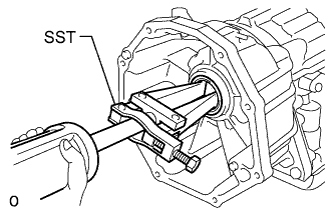
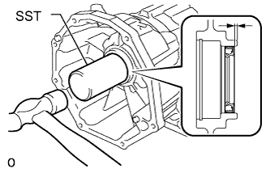

TRANSFER ADAPTER OIL SEAL > REPLACEMENT |
| 1. REMOVE TRANSFER ASSEMBLY |
Remove the transfer (Click here).
| 2. REMOVE TRANSFER CASE ADAPTER REAR OIL SEAL |
|  |
Using SST, tap out the oil seal.
| 3. INSTALL TRANSFER CASE ADAPTER REAR OIL SEAL |
Coat the lip of a new oil seal with ATF.
|  |
Using SST and a hammer, tap in the oil seal.
| 4. INSTALL TRANSFER ASSEMBLY |
Install the transfer (Click here).